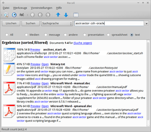

Recoll
Dieser Artikel wurde für die folgenden Ubuntu-Versionen getestet:
Ubuntu 16.04 Xenial Xerus
Ubuntu 14.04 Trusty Tahr
Zum Verständnis dieses Artikels sind folgende Seiten hilfreich:
Recoll  ist eine schlanke und schnelle Dokumentensuchmaschine, die eine Vielzahl an Formaten unterstützt. Neben einer komfortabel zu bedienenden grafischen Oberfläche gibt es auch eine Lens für Unity, KRunner-Integration sowie KIO- und Kommandozeilenunterstützung. Neben komplexen Abfragen und transparenter Dekompression werden auch verschiedene Sprachen unterstützt.
ist eine schlanke und schnelle Dokumentensuchmaschine, die eine Vielzahl an Formaten unterstützt. Neben einer komfortabel zu bedienenden grafischen Oberfläche gibt es auch eine Lens für Unity, KRunner-Integration sowie KIO- und Kommandozeilenunterstützung. Neben komplexen Abfragen und transparenter Dekompression werden auch verschiedene Sprachen unterstützt.
 Nativ unterstützte Formate bzw. Dateitypen:
Text-Dateien (.txt)
HTML-Dateien (.html/.htm)
maildir und mailbox (.mbox) - (z.B. Thunderbird oder Evolution)
gaim und Purple-Logs (z.B. Empathy oder KDE-Telepathy)
Scribus-Dateien (.sla)
Dia-Diagramme (.dia)
Die folgenden XML-Dateitypen brauchen zusätzlich noch die Programme xsltproc und unzip für komprimierte Dateien.
Abiword-Dateien (.abw)
Fictionbook-Dateien (.fb2)
kWord-Dateien, Calligra/KOffice (.kwd)
Microsoft Office Open XML (.docx) ?
LibreOffice/Apache OpenOffice (.odt/.ods/.odc/.odp)
Scalable Vector Graphics (.svg/.svgz)
Gnumeric-Dateien (.gnumeric)
Okular-Kommentar-Dateien
Für die Unterstützung der folgenden Dateitypen wird jeweils ein bestimmtes Programm benötigt, damit Recoll diese verwenden kann. Manche Dateien können mit Hilfe von Python-Modulen gelesen werden. Da Ubuntu standardmäßig mit Python ausgeliefert wird, können diese Dateien indexiert werden, ohne das etwas nachinstalliert werden muss.
| Titel | ||
| Dateien | Dateiendung | Benötigtes Programm |
| Portable Document Format | pdftotext aus poppler-utils | |
| Microsoft Word-Dateien | .doc | antiword & wvWare |
| Wordperfect-Dateien | .wdp | wpd2html |
| LyX-Dateien | .lyx | LyX |
| Powerpoint & Excel | .ppt & .xls | catdoc |
| Microsoft HTML-Hilfe-Dateien | .chm | pychm & chmlib |
| GNU Info-Dateien | - | info Befehl |
| TAR-Archive | .tar | tar |
| ZIP-Archive | .zip | Python |
| RAR-Archive | .rar | Python-Modul „rarfile“ & unrar |
| iCalendar-Dateien | .ics | Python & icalendar |
| Mozilla-Kalenderdaten | .ics / .sqlite | siehe Wiki |
| postscript-Dateien | .ps | ghostscript & pstotext |
| Rich Text File | .rtf | unrtf |
| TeX-Dateien | .tex | untex |
| DVI-Dateien | .dvi | dvips |
| DjVu-Dateien | .djvu | DjVuLibre |
| Audio-Metadaten | - | Python-Modul „mutagen“ |
| Metadaten von Bildern | - | exiftool |
| Midi Karaoke-Dateien | .kar | Python-Midi-Module & chardet |
| Webarchiv-Format | .war | Python-Modul „tarfile“ |
| MHTML Archiv-Dateien | .mht | - |
Installation¶
Um Recoll zu verwenden, muss man die folgenden Pakete installieren [1]. Danach kann Recoll die nativ unterstützten Formate sowie XML-Dateien indexieren (wahrscheinlich auch weitere Formate). Wenn man LibreOffice installiert hat, kann Recoll auch OpenDocument-Formate indexieren.
recoll (universe)
python
xsltproc (XML)
unzip (für komprimierte Dateien und Archive)
 mit apturl
mit apturl
Paketliste zum Kopieren:
sudo apt-get install recoll python xsltproc unzip
sudo aptitude install recoll python xsltproc unzip
Unterstützung für weitere Datenformate nachinstallieren¶
Die folgende Auflistung listet die Programme, die zum Indexieren von häufig verwendeten Dateiformaten benötigt werden.
poppler-utils (Portable Document File)
antiword (universe, MS Word)
wv (universe, für besonders hartnäckige MS Word-Dokumente)
libwpd-tools (universe, Wordperfect)
catdoc (universe, Excel- und Powerpoint)
libchm-bin (universe, CHM)
info (GNU Info)
tar (Tape Archiver-Archive)
librdf-icalendar-perl (universe, iCal)
unrtf (universe, Rich Text File)
untex (universe, TeX)
dvi2ps (universe, DVI)
libimage-exiftool-perl (universe, Metadaten von Bildern)
python-chardet (MIDI)
python-midiutil (universe, MIDI)
mit apturl
Paketliste zum Kopieren:
sudo apt-get install poppler-utils antiword wv libwpd-tools catdoc libchm-bin info tar librdf-icalendar-perl unrtf untex dvi2ps libimage-exiftool-perl python-chardet python-midiutil
sudo aptitude install poppler-utils antiword wv libwpd-tools catdoc libchm-bin info tar librdf-icalendar-perl unrtf untex dvi2ps libimage-exiftool-perl python-chardet python-midiutil
PPA¶
Wer interessiert ist, die jeweils aktuellste Version zu nutzen, kann ein "Personal Packages Archiv" (PPA) [2] verwenden.
Adresszeile zum Hinzufügen des PPAs:
ppa:recoll-backports/recoll-1.15-on
Hinweis!
Zusätzliche Fremdquellen können das System gefährden.
Ein PPA unterstützt nicht zwangsläufig alle Ubuntu-Versionen. Weitere Informationen sind der  PPA-Beschreibung des Eigentümers/Teams recoll-backports zu entnehmen.
PPA-Beschreibung des Eigentümers/Teams recoll-backports zu entnehmen.
Damit Pakete aus dem PPA genutzt werden können, müssen die Paketquellen neu eingelesen werden.
Nach dem Aktualisieren der Paketquellen erfolgt die Installation wie oben angegeben.
Verwendung¶
Das Programm kann als recoll gestartet werden [3]. Wer nicht möchte, dass Recoll sämtliche Dateien im Homeverzeichnis, einschließlich Konfigurationsdateien und versteckten Dateien, indiziert und auswertet, sollte die Indizierung auf die benötigten Verzeichnisse einschränken.
Startverzeichnis für die Indizierung ändern¶
Wer also lediglich seine Dokumente (z.B. unter ~/Dokumente) indizieren lassen möchte, sollte in Recoll unter dem Menüpunkt "Voreinstellungen → Indizierungskonfiguration → Globale Parameter" als Startverzeichnis nur den entsprechenden Pfad eintragen. Nach einem Aktualisieren des Indexes über "Datei → Update Index" durchsucht Recoll nur noch dieses Verzeichnis (und dessen Unterverzeichnisse).
Darstellung des Suchergebnisses anpassen¶
Recoll bietet eine Funktion, mit der man über HTML die Darstellung der Ausgabe ändern kann. Mehrere Beispiele sind dazu auf der Projektseite zu finden. Möchte man die Darstellung anpassen, muss man den Formatstring für Ergebnisse ändern. Dazu öffnet man den Einstellungsdialog über "Voreinstellungen → Benutzeroberfläche → Formatstring für Ergebnisse".
Die Standardausgabe ist wie folgt angegeben (Recoll 1.15):
1 2 3 4 5 6 7 8 9 | <table> <tr> <td><img src='%I'></td> <td>%R %S %L <b>%T</b><br> %M %D <i>%U</i><br> %A %K </td> </tr> </table> |
Problembehebung¶
Tar-Archive werden nicht indexiert¶
Da man selten nach Daten sucht, die in einem Tar-Archiv liegen, ist die Indexierung dieser standardmäßig deaktiviert. Möchte man, dass Tar-Archive indexiert werden, dann muss man dies explizit über die Datei ~/.recoll/mimeconf erledigen. Dort fügt man das folgende ein.
[index]
application/x-tar = execm rcltarNicht westeuropäische Zeichen in RTF-Dateien¶
Das Programm unrtf kann bis zur Version 0.21.8 nur mit westeuropäischen Zeichensätzen umgehen. Besitzt man jedoch RTF-Dateien, die etwa in russisch oder chinesisch verfasst sind, kann es zu Problemen kommen. Empfohlen wird dann eine möglichst aktuelle Version von unrtf .
Links¶
Volltextsuche mit Recoll - Dateien in Linux durchforsten
 - Pro-Linux, 03/2014
- Pro-Linux, 03/2014Desktop-Suche mit Recoll
- heise Open Source, 09/2012Total Recoll - Desktopsuche der feinen Art
- Artikel LinuxUser, 12/2011Wanted: Desktopsuchmaschine für Linux Ubuntu
- Blogbeitrag, 07/2011Recoll Unity Lens
Blogbeitrag, webupd8.orgDesktopsuchmaschinen
 Übersichtsartikel
Übersichtsartikel
- Erstellt mit Inyoka
-
 2004 – 2017 ubuntuusers.de • Einige Rechte vorbehalten
2004 – 2017 ubuntuusers.de • Einige Rechte vorbehalten
Lizenz • Kontakt • Datenschutz • Impressum • Serverstatus -
Serverhousing gespendet von